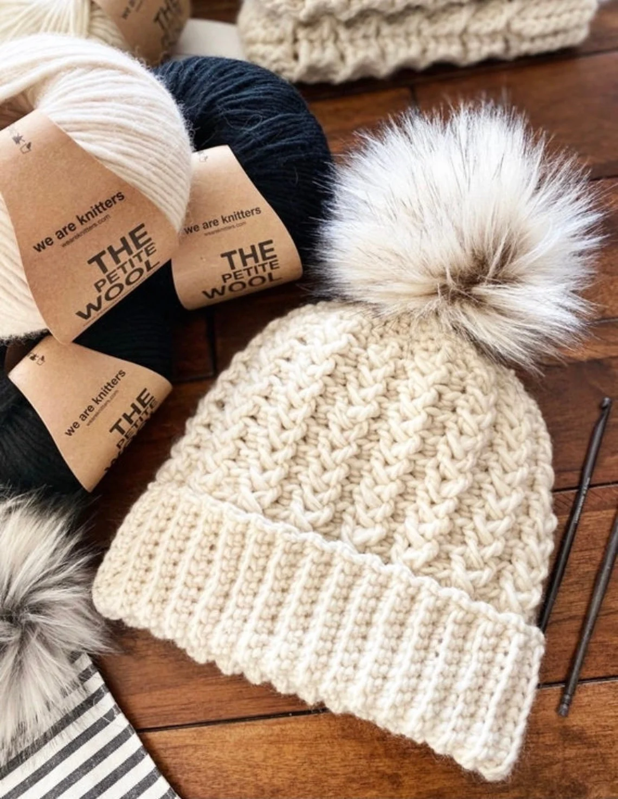
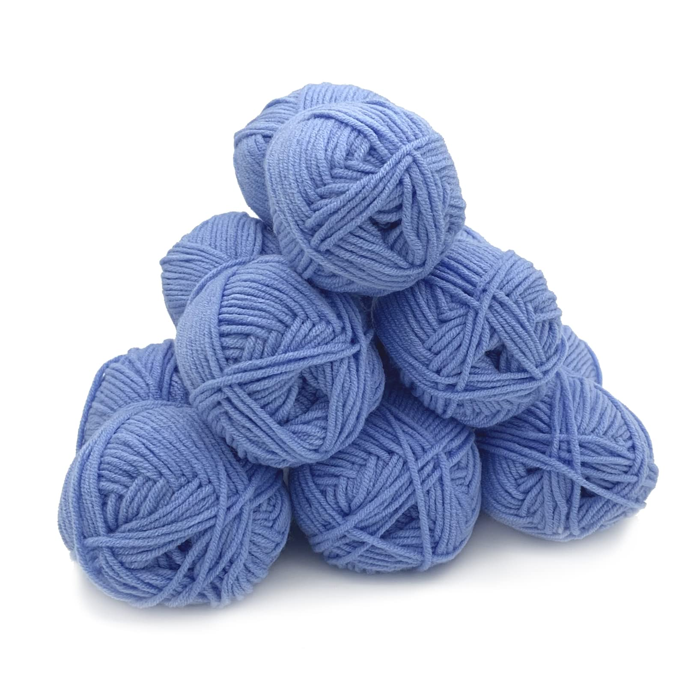
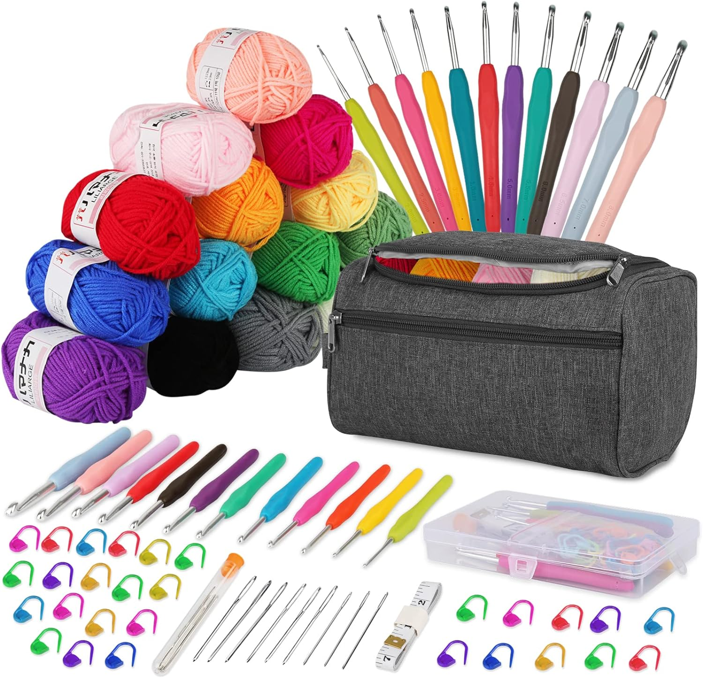
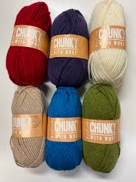
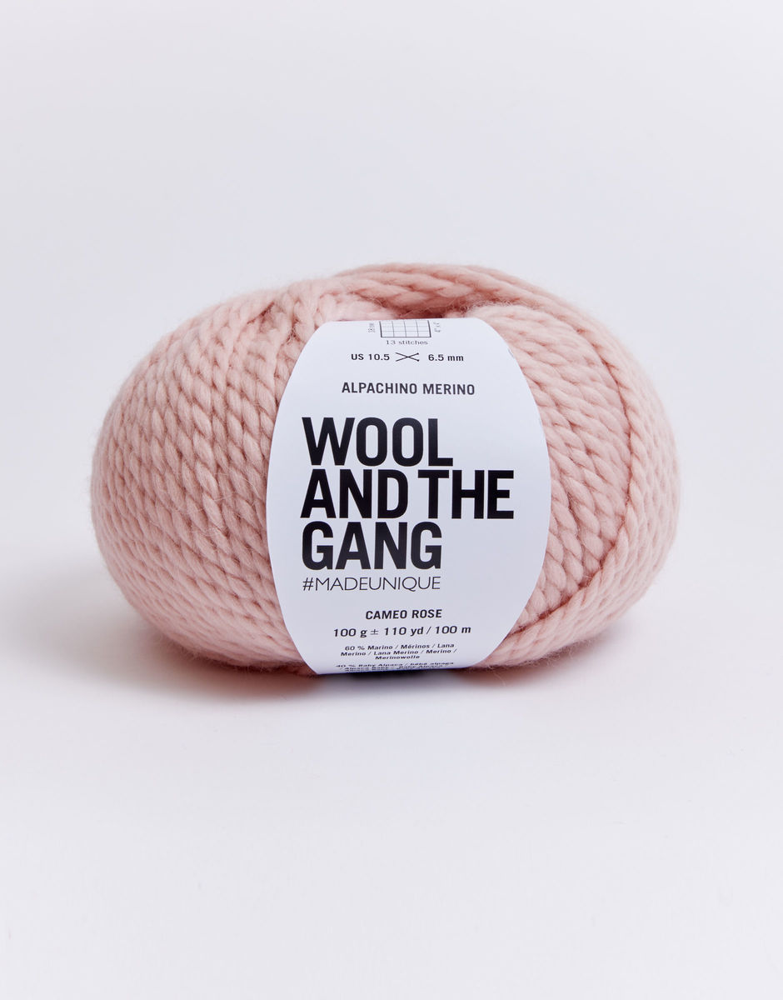
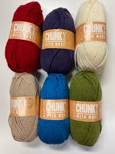
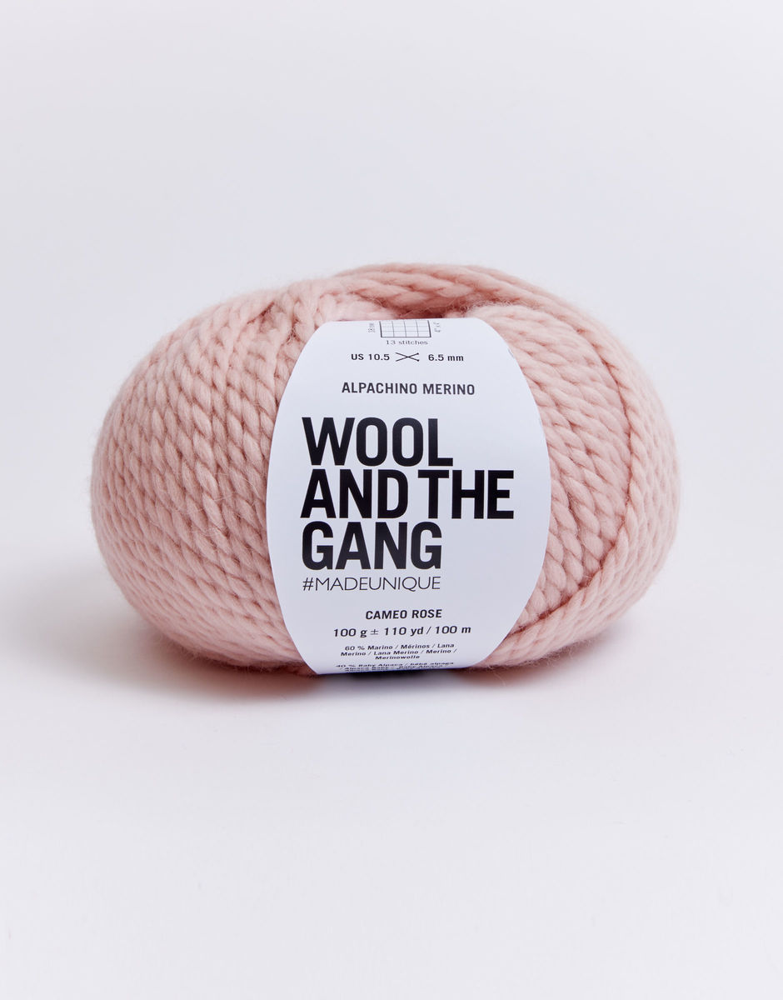

About WoolHouse
Welcome to WoolHouse - The Home for everything crochet! We stock all different types of wool such as Double Knit(DK), Aran and more.
With WoolHouse you'll recieve FREE Delivery on All Orders.
Our most popular items..




 


